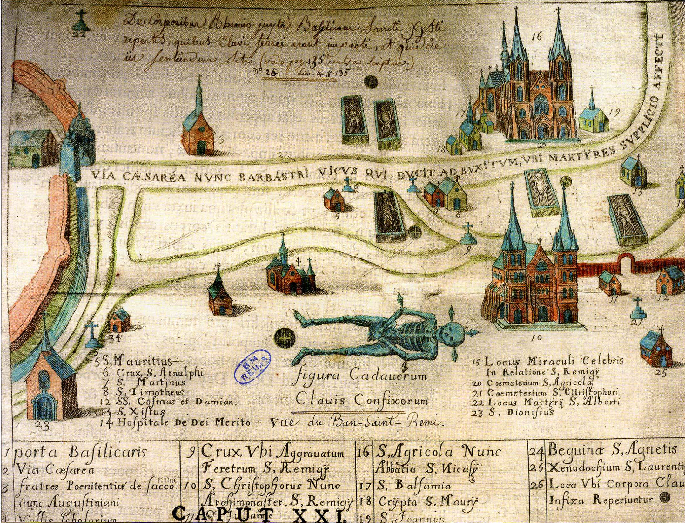

Éloi a inventé les reliques de saint Piat, c'est là le terme utilisé lorsque l'on découvre un trésor... ou la relique d'un saint.
Si le martyre de Piat à Tournai est connu, sa légende raconte que son exécution ne se déroula pas comme prévu. Après l’échec de sa décapitation, il se releva et suivi de ses disciples, avec le haut de son crâne entre les mains, marcha longtemps avant de s'effondrer à Seclin, distant d'une trentaine de kilomètres.
Selon la Vie de saint Éloi (texte rédigé près d’une décennie après sa mort et remanié au VIIIe siècle), il semble connaître encore l'existence d'un ancien cimetière antique dans la capitale du Mélantois 350 ans après son abandon. Éloi se rend sur place et y entame des « fouilles » au cours desquelles il découvre un corps ainsi que de longs clous dont il a la certitude qu’ils proviennent du martyre de Piat.

À la suite de cette découverte, il ordonne la construction d'un sanctuaire en son honneur.
L’archéologie a démontré que ces clous ont, en réalité, été utilisés pour la fabrication d’un cercueil. En effet, ces éléments de quincaillerie ont à chaque fois été mis au jour au contact des corps dans les sépultures antiques de la nécropole de Seclin